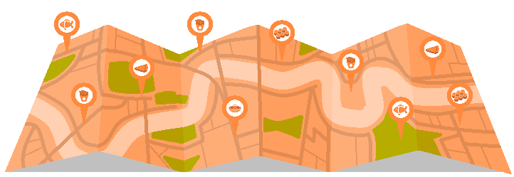

- EC1A: Barbican, Clerkenwell, Finsbury
- EC1M: Barbican, Clerkenwell, Finsbury
- EC1N: Barbican, Clerkenwell, Finsbury
- EC1P: Barbican, Clerkenwell, Finsbury
- EC1R: Barbican, Clerkenwell, Finsbury
- EC1V: Barbican, Clerkenwell, Finsbury
- EC1Y: Barbican, Clerkenwell, Finsbury
- EC2A: Moorgate, Liverpool Street
- EC2M: Moorgate, Liverpool Street
- EC2N: Moorgate, Liverpool Street
- EC2P: Moorgate, Liverpool Street
- EC2R: Moorgate, Liverpool Street
- EC2V: Moorgate, Liverpool Street
- EC2Y: Moorgate, Liverpool Street
- EC3A: Aldgate, Monument, Tower Hill
- EC3M: Aldgate, Monument, Tower Hill
- EC3N: Aldgate, Monument, Tower Hill
- EC3P: Aldgate, Monument, Tower Hill
- EC3R: Aldgate, Monument, Tower Hill
- EC3V: Aldgate, Monument, Tower Hill
- EC4A: Fleet Street, St Paul's
- EC4M: Fleet Street, St Paul's
- EC4N: Fleet Street, St Paul's
- EC4P: Fleet Street, St Paul's
- EC4R: Fleet Street, St Paul's
- EC4V: Fleet Street, St Paul's
- EC4Y: Fleet Street, St Paul's
- WC1A: Bloomsbury, Gray's Inn
- WC1B: Bloomsbury, Gray's Inn
- WC1E: Bloomsbury, Gray's Inn
- WC1H: Bloomsbury, Gray's Inn
- WC1N: Bloomsbury, Gray's Inn
- WC1R: Bloomsbury, Gray's Inn
- WC1V: Bloomsbury, Gray's Inn
- WC1X: Bloomsbury, Gray's Inn
- WC2A: Covent Garden, Holborn, Strand
- WC2B: Covent Garden, Holborn, Strand
- WC2E: Covent Garden, Holborn, Strand
- WC2H: Covent Garden, Holborn, Strand
- WC2N: Covent Garden, Holborn, Strand
- WC2R: Covent Garden, Holborn, Strand
- E1: Mile End, Stepney, Whitechapel
- E2: Bethnal Green, Shoreditch
- E3: Bow, Bromley-by-Bow
- E4: Chingford, Highams Park
- E5: Clapton
- E6: East Ham, Beckton
- E7: Forest Gate, Upton Park
- E8: Hackney, Dalston
- E9: Hackney, Homerton
- E10: Leyton
- E11: Leytonstone
- E12: Manor Park
- E13: Plaistow
- E14: Isle of Dogs, Millwall, Poplar
- E15: Stratford, West Ham
- E16: Canning Town, North Woolwich
- E17: Walthamstow
- E18: South Woodford
- E20: Olympic Park, Stratford
- N1: Barnsbury, Canonbury, Islington
- N2: East Finchley
- N3: Finchley Central
- N4: Finsbury Park, Manor House
- N5: Highbury
- N6: Highgate
- N7: Holloway
- N8: Crouch End, Hornsey
- N9: Lower Edmonton
- N10: Muswell Hill
- N11: Friern Barnet, New Southgate
- N12: North Finchley, Woodside Park
- N13: Palmers Green
- N14: Southgate
- N15: Seven Sisters
- N16: Stamford Hill, Stoke Newington
- N17: Tottenham
- N18: Upper Edmonton
- N19: Archway, Tufnell Park
- N20: Totteridge, Whetstone
- N21: Winchmore Hill
- N22: Alexandra Palace, Wood Green
- NW1: Camden Town, Regent's Park
- NW2: Cricklewood, Neasden
- NW3: Hampstead, Swiss Cottage
- NW4: Brent Cross, Hendon
- NW5: Kentish Town
- NW6: Kilburn, Queens Park, West Hampstead
- NW7: Mill Hill
- NW8: St John's Wood
- NW9: Colindale, Kingsbury
- NW10: Harlesden, Kensal Green, Willesden
- NW11: Golders Green, Hampstead Garden Suburb
- SE1: Bermondsey, Borough, Southwark, Waterloo
- SE2: Abbey Wood
- SE3: Blackheath, Westcombe Park
- SE4: Brockley, Crofton Park, Honor Oak Park
- SE5: Camberwell
- SE6: Bellingham, Catford, Hither Green
- SE7: Charlton
- SE8: Deptford
- SE9: Eltham, Mottingham
- SE10: Greenwich
- SE11: Lambeth
- SE12: Grove Park, Lee
- SE13: Hither Green, Lewisham
- SE14: New Cross, New Cross Gate
- SE15: Nunhead, Peckham
- SE16: Rotherhithe, South Bermondsey, Surrey Docks
- SE17: Elephant & Castle, Walworth
- SE18: Plumstead, Woolwich
- SE19: Crystal Palace, Upper Norwood
- SE20: Anerley, Penge
- SE21: Dulwich
- SE22: East Dulwich
- SE23: Forest Hill
- SE24: Herne Hill
- SE25: South Norwood
- SE26: Sydenham
- SE27: Tulse Hill, West Norwood
- SE28: Thamesmead
- SW1: Belgravia, Pimlico, Westminster
- SW2: Brixton, Streatham Hill
- SW3: Brompton, Chelsea
- SW4: Clapham
- SW5: Earl's Court
- SW6: Fulham, Parson's Green
- SW7: South Kensington
- SW8: Nine Elms, South Lambeth
- SW9: Brixton, Stockwell
- SW10: West Brompton, World's End
- SW11: Battersea, Clapham Junction
- SW12: Balham
- SW13: Barnes, Castelnau
- SW14: East Sheen, Mortlake
- SW15: Putney, Roehampton
- SW16: Norbury, Streatham
- SW17: Tooting
- SW18: Earlsfield, Wandsworth
- SW19: Merton, Wimbledon
- SW20: Raynes Park, South Wimbledon
- W1: Marylebone, Mayfair, Soho
- W2: Bayswater, Paddington
- W3: Acton
- W4: Chiswick
- W5: Ealing
- W6: Hammersmith
- W7: Hanwell
- W8: Kensington
- W9: Maida Vale, Warwick Avenue
- W10: Ladbroke Grove, North Kensington
- W11: Holland Park, Notting Hill
- W12: Shepherd's Bush
- W13: West Ealing
- W14: West Kensington
- BR: Bromley
- CR: Croydon
- DA: Dartford
- EN: Enfield
- HA: Harrow
- IG: Ilford
- KT: Kingston
- RM: Romford
- SM: Sutton
- TW: Twickenham
- UB: Uxbridge
- WD: Watford
